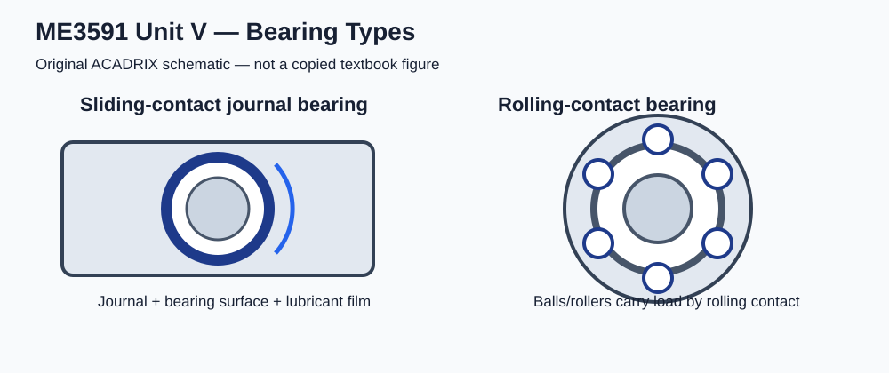

ACADRIX • Anna University R-2021 • Semester 5
Sliding-contact bearings support the shaft through sliding contact between the journal and bearing surface, normally separated by lubricant during hydrodynamic operation.
Rolling-contact bearings use balls or rollers between the inner and outer raceways. Bhandari treats their identification, static capacity, dynamic capacity, survival relation and cyclic loading separately in Chapter 22. fileciteturn190file8L496-L506

A hydrodynamic journal bearing carries load through a pressure-generating lubricant film created by relative motion between the journal and bearing. Important design variables include load, speed, journal diameter, bearing length, viscosity and radial clearance.
where W is radial load, L is bearing length and d is journal diameter.
Bhandari's design procedure begins by selecting recommended maximum average pressure, viscosity, minimum bearing modulus, clearance ratio and length-to-diameter ratio. The selected L/d ratio is then used to determine L and check bearing pressure. fileciteturn190file3L179-L227
For the rpm form used in the worked problem, μ is in Pa·s, p in Pa, d and c in the same length unit. The factor 1/60 converts rpm to revolutions per second. Keep units consistent before substitution.
The Sommerfeld number and L/d ratio are used with the standard bearing performance graphs/data to obtain quantities such as coefficient of friction, minimum film thickness ratio and oil-flow parameter. The available worked ME3591 solution uses this chart-based approach and explicitly uses PSG Design Data Book data for the bearing performance values. fileciteturn189file14L553-L574
Use d in metres when calculating v in m/s, W in newtons and f as the dimensionless coefficient of friction.
The minimum film thickness is obtained from the bearing performance relation/chart for the calculated Sommerfeld number and L/d. If the chart gives hmin/c, then:
For a bearing problem that assumes the generated heat is carried away by the oil flow, calculate friction power first and then use the specified oil-flow and heat-capacity relation to determine temperature rise. The exact property values must come from the problem/design data.
Bhandari's bearings chapter also includes hydrostatic lubrication. It differs from hydrodynamic lubrication because externally supplied pressurised lubricant is used to support the load rather than relying solely on pressure generated by journal motion. The syllabus specifically names hydrodynamic journal bearings, so hydrostatic details are supporting background rather than a separate main R-2021 Unit V heading. fileciteturn191file5L304-L313
Rolling-contact bearings are selected rather than dimensioned from scratch. The important design quantities are bearing type, bore diameter, static load rating C₀, dynamic load rating C, equivalent dynamic load P, required life and reliability.
Bhandari gives standard bearing series and identification examples, including deep-groove ball bearing series and roller-bearing series. fileciteturn190file2L118-L139
Static load acts when the shaft is stationary and causes permanent deformation at the most heavily loaded contact. Bhandari defines the basic static load rating in terms of the limiting permanent deformation at the most heavily stressed contact. fileciteturn190file1L74-L81
For an actual design, compare the appropriate static equivalent load with the bearing's basic static load rating using the prescribed bearing data.
When life is specified in million revolutions, use L10 consistently. For life specified in hours, convert speed and hours to million revolutions before applying the bearing-life relation.
For combined radial and axial loading, the equivalent dynamic load is selected using the bearing manufacturer's/standard catalogue factors X, Y and e. For the worked ME3591 selection, the verified solution checks Fa/Fr against e and then uses P = XVFr + YFa when the axial component must be included. fileciteturn193file6L219-L237
The R-2021 syllabus explicitly includes design of seals and gaskets. fileciteturn190file4L253-L266 However, the available Bhandari 4th Edition source located for this verification pass does not expose a dedicated seals-and-gaskets chapter in its table of contents; its bearings section is Chapters 21 and 22. fileciteturn191file5L304-L324 Therefore this page deliberately does not invent a Bhandari-based numerical design procedure for seals/gaskets. Prepare the syllabus terminology and selection/design principles only from the prescribed text/source material available to ACADRIX, and use the permitted PSG data where the examination provides the required standard data.
| Topic | Prepare |
|---|---|
| Sliding bearing | Construction, principle, bearing pressure, lubrication |
| Hydrodynamic journal bearing | p, Sommerfeld number, Raimondi–Boyd graphs, friction, oil film, flow, heat balance |
| Rolling bearing | Types, identification, static/dynamic capacity, rating life, equivalent load, selection |
| Seals | Syllabus scope and selection/design principles supported by prescribed source |
| Gaskets | Syllabus scope and selection/design principles supported by prescribed source |
Unit scope verified against the stored R-2021 Mechanical Engineering syllabus. fileciteturn190file4L253-L266 Bearing theory/design coverage verified against Bhandari Chapters 21 and 22. fileciteturn191file5L304-L324 Static capacity definition verified directly from Bhandari. fileciteturn190file1L74-L81 Bhandari's hydrodynamic design procedure was verified from the available text. fileciteturn190file3L179-L227